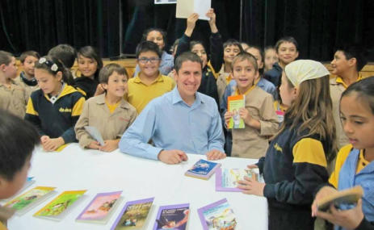

Visitas de Autor
Mauricio realiza presentaciones literarias en colegios y también conferencias para profesores y padres.
Los objetivos de las visitas de autor son:
Descripción:
Datos necesarios:
Los objetivos de las visitas de autor son:
- Promover el placer de leer.
- Estimular el pensamiento crítico.
- Desarrollar la apreciación estética.
- Conocer el proceso de creación literaria.
- Valorar la creación artística y el derecho de autor.
Descripción:
- Narración y lectura en voz alta de fragmentos escogidos y capítulos de los libros del autor.
- Preguntas de los niños. A través de las respuestas se busca guiar hacia el gusto por la lectura.
Datos necesarios:
- Razón social del establecimiento.
- RUT.
- Dirección.
- Fecha y horario de la presentación.
- Datos persona de contacto: nombre, teléfono y mail.

Datos de la presentación:
- Valor de visitas presenciales: $300.000 líquidos con boleta de honorarios electrónica.
- Valor presentaciones virtuales: $150.000 líquidos.
- Se realizan encuentros con niños, conferencias para docentes y charlas para padres.
- La cantidad de niños es flexible y depende de la edad, con un máximo de 200 en cada sesión.
- Para regiones se coordinan giras de dos o tres días.